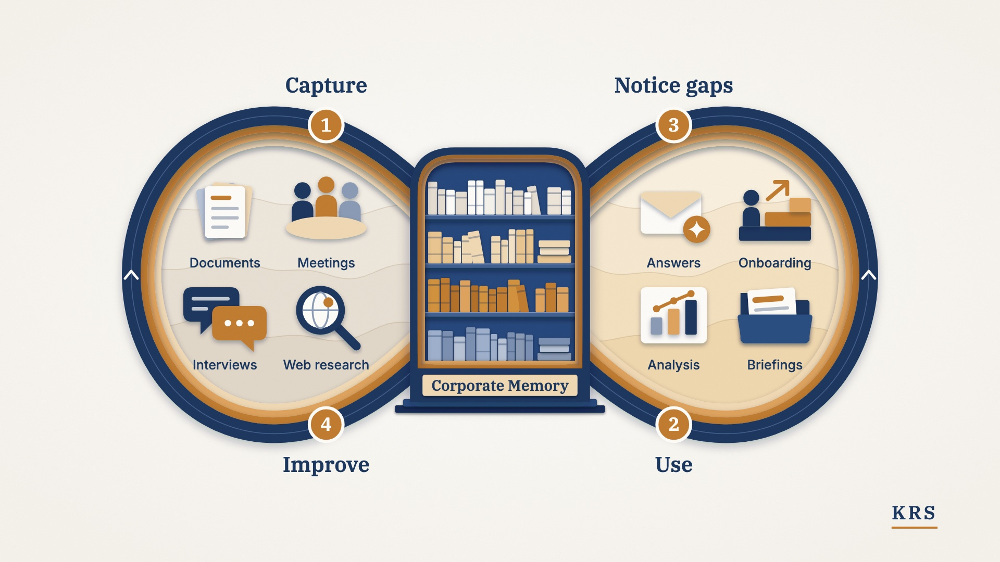
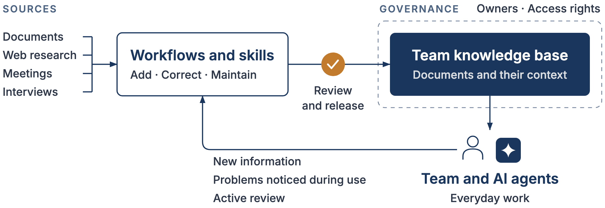
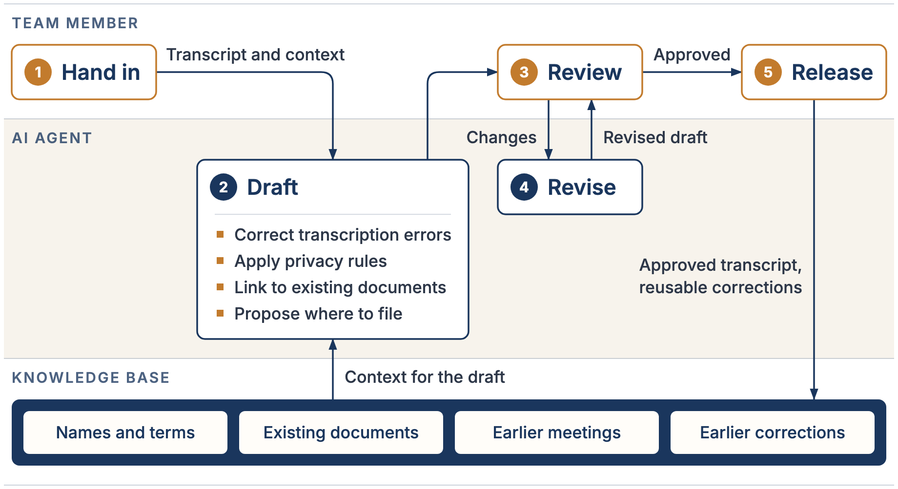
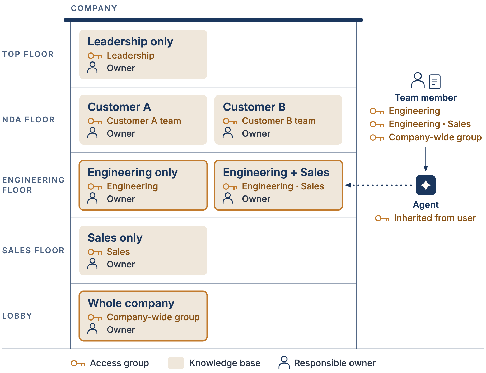

Scaling a Corporate Memory System
What a Corporate Memory System consists of, how a team sets it up and keeps it current, and how the approach is rolled out to further teams with clear governance.
Originally published on LinkedIn.

AI is changing how organisations collect and use knowledge. It enables natural-language searches across large document collections and makes it practical to continuously capture expert reasoning that in the past was never written down. As shared context, this knowledge helps people and AI do better work, work faster and undertake useful tasks that previously required too much effort.
Major providers such as Anthropic, OpenAI and Microsoft already offer memory within their AI assistants, signalling the value of persistent context for effective work with AI. A Corporate Memory System extends this principle to the shared knowledge of teams, with organisational control over access and maintenance, and a vendor-independent design based on open formats. It brings together the information relevant to a team’s everyday work in a shared, maintained knowledge base that people and AI can use. Across an organisation, it comprises many such knowledge bases.
The approach is designed for organisations whose knowledge is spread across documents, meetings and the experience of individual people and has yet to be brought together. This article lays out the components of such a system, how a team sets it up and keeps it current, how the system is rolled out to further teams, and how governance can be organised. The final section describes our approach and the role of Knowledge Retention Solutions (KRS).
The components of a Corporate Memory System
A Corporate Memory System combines three components:
- Knowledge bases: documents, web research, meetings and interviews.
- Reusable workflows and AI skills: procedures for adding new information and for correcting and maintaining existing knowledge, and the written instructions that tell an AI agent how to carry them out.
- Governance: responsibilities, access rights and rules for changing and sharing knowledge.
Figure 1 shows how these components work together.


A knowledge base combines documents with the context needed to understand and apply them. This includes experience and decision reasoning captured through interviews and conversations, such as why a choice was made, which warning signs mattered or when an exception was necessary. Additional preparation can make this knowledge more useful: Document Twins complement original files with text descriptions of presentation visuals or spreadsheet logic and assumptions, while overview documents and topic guides connect material from documents and interviews into coherent explanations. Original source content and later explanations remain distinguishable and traceable.
Implementation and scaling
Implementation has two phases: initial setup creates a useful first knowledge base; ongoing use and maintenance keeps it current, expands its coverage and improves its usefulness over time.
Scaling means designing both phases to be repeated efficiently across many teams, using reusable workflows for assembling and maintaining knowledge bases, practical training materials and an internal support team. As more teams take part, knowledge also has to be shared across team boundaries. Governance defines which information belongs to which knowledge base, who is responsible for it, who may access it and how that access is managed.
Phase A: Initial setup
1. Agree on scope and responsibilities. Every knowledge base needs a clear scope: which kinds of documents and work belong in it, and what does not. A scope can follow a team, a project or a topic; for a team, its primary tasks are a good starting point for defining it. Once that boundary is clear, the team agrees who adds and prepares information, who may read or change it, and who takes overall responsibility for the knowledge base as its owner and main contact.
2. Gather context and build the knowledge base. To become useful, a knowledge base needs a critical mass of information. This means gathering the existing documents that fall within its scope, adding external research where needed, and filling the gaps through expert or colleague interviews, interviews led by an AI agent, guided self-recordings and meeting transcripts. The material is then prepared and checked for use. A useful reference for when it is enough is what a new colleague would need for onboarding. Targeted expert interviews can accelerate the start; ongoing contributions then extend the knowledge as the team works.
3. Demonstrate value through real tasks. People will only invest time in maintaining a knowledge base if it clearly helps them in their daily work. When team members use it with AI on their own tasks, for example preparing a customer pitch, answering a design question or onboarding a new colleague, that value tends to show quickly, because they often see for the first time how helpful an AI agent becomes when it can draw on the full context of their work and they no longer have to explain everything themselves. They also need to see that contributing is easy: a gap or an error can be reported and resolved directly with the agent.
Setup is complete when the team can access the knowledge base, has used it on real tasks, knows how to give feedback and has someone responsible for processing it.
Phase B: Ongoing use and maintenance
Once the team has experienced the value of the knowledge base and wants to keep using it, it needs to take ownership of its maintenance: deciding what to add, update or retire, and learning to carry out the essential workflows independently. It starts by agreeing which sources it will capture continuously, in particular knowledge that has not been written down, and which routines will keep the knowledge base current.
Two types of workflow cover the essential activities:
| Workflow type | What it must enable |
|---|---|
| Incorporate new information | Prepare new sources and explanations, compare them with existing knowledge and update affected content. |
| Revise existing knowledge | Resolve errors and contradictions using evidence, clarify or consolidate content, retire outdated material and route unresolved questions to the owner. |
Three triggers initiate these workflows: new information, problems noticed during use and active review and monitoring. Incorporating new information and resolving problems noticed during use must work from the start. Active review and monitoring can follow later as scheduled AI checks that identify outdated content or contradictions and monitor external developments.
Within these two types, each kind of input and each form of feedback needs its own workflow that describes how team member, agent and knowledge base interact. Processing a meeting transcript is one example of incorporating new information; why meetings are such a rich source of reasoning and experience is described in a separate article. When a meeting transcript is incorporated into the knowledge base, the goals are to correct transcription errors, meet the organisation’s privacy requirements, link relevant passages to existing documents and context, and file the transcript in its intended place, where it can easily be found later.
Figure 2 shows the workflow. A team member supplies the transcript and any additional context. The agent drafts a corrected transcript, drawing on the knowledge base to clarify names, terms and references and following the organisation’s instructions for any sensitive information the team member has not already removed. The team member reviews the draft and the agent revises it. The approved transcript and reusable corrections are then saved to the knowledge base.


Revising existing knowledge should be simple: a team member reports a gap or an error to the agent, which proposes a correction for review; authorised users can also edit documents directly. A shared version history must be part of the knowledge base. The technical platform has to record who changed what and when and allow earlier versions to be inspected or restored, as is the case with Microsoft SharePoint or Git, for example.
Rolling out to further teams
The rollout to each additional team follows a standardised path. Some steps always stay with the team; for the others, the organisation defines a few options and agrees the choice with each team.
| Step | Who does it |
|---|---|
| Kick-off with scope and responsibilities | The team or at least its lead, guided by the internal support team or KRS |
| Creating the knowledge base on the platform | Internal support team or KRS |
| Collecting existing material | The team |
| Processing the initial material | The team, the internal support team or KRS |
| Capturing unwritten knowledge | KRS, trained internal interviewers or the team itself, depending on the way chosen |
| Testing on real tasks | The team, with its feedback processed by the internal support team or KRS |
| Planning ongoing capture and maintenance | The team, guided by the internal support team or KRS |
| Maintaining the content | The team |
| Maintaining workflows and skills | Internal support team, optionally with improvements supplied by KRS as a package |
For most steps, the decision is a matter of balance: how much a team is able, willing and mature enough to do itself, and how much the internal support team, depending on its own experience, or KRS should take on. In the first projects, the balance can be expected to lie with the internal support team and KRS; as processes and routines mature, it shifts steadily towards the teams.
The widest choice concerns knowledge that has not been written down. Four ways are available and can be combined:
- Expert interviews conducted by KRS or by trained internal interviewers, using the KRS interview method described in a separate article.
- AI interviews, set up with support from KRS.
- Interviews within the team, supported by training and prepared interview guides.
- Organic growth without dedicated capture: knowledge enters through meetings and everyday contributions.
This choice, too, is a trade-off. In our experience, expert interviews are the fastest and most efficient way to reach the critical mass at which a knowledge base becomes useful. Depending on the people involved, AI interviews and interview guides can meet with far less engagement, or even resistance, especially if experts come to feel that their knowledge is simply being extracted; a conversation with a skilled interviewer makes this less likely. In the end, the organisation weighs how quickly and how deeply it wants to capture critical knowledge at the start against the additional effort and cost.
Standard package and internal support team. The workflows and skills for preparing sources, incorporating new information and revising existing knowledge are implemented and tested once on the organisation’s platform. A new team receives them ready to use, together with a prepared knowledge base structure, a start guide and training material. A small internal support team introduces new teams, helps them choose between the options and maintains this standard package, feeding the teams’ experience back into it. Adaptations a team makes for its own work remain that team’s responsibility.
Governance
The purpose of governance is to make knowledge available to those who need it and to protect what must stay restricted. Governance therefore defines, for every knowledge base, who may read it, who may change it and who is responsible for it. The organisation’s knowledge can be pictured as a building: floors and rooms hold the knowledge bases, access groups provide the keys, and each knowledge base has a responsible owner.


When a Corporate Memory System is rolled out across many teams, a practical starting point is a knowledge base for each team, alongside a company-wide knowledge base with information relevant to all employees, such as the brand book and company announcements. In addition, shared knowledge bases between teams should reflect how people work together. Sales and engineering, for example, may need a joint one. For shared knowledge bases, responsibility for maintaining the content must be explicit. Some knowledge bases stay restricted to small groups, for example leadership topics or customer projects under a non-disclosure agreement. Individuals may also want personal spaces for notes and information they do not need or wish to share with the team; such a space works like the knowledge base of a team of one.
The platform must enforce these access rights. An agent acting for a user works within that user’s rights; an agent that runs unattended, such as a scheduled check, needs rights of its own, granted as narrowly as possible. In SharePoint, for example, sites and document libraries can represent the floors and rooms, with group permissions. More granular access rights at folder or even file level are possible, but we recommend keeping the number of permission layers low so that access remains understandable. The same principles apply on other platforms, including systems that use file and folder permissions.
Governance adds work that few people take on willingly. Team members will therefore welcome simple rules and an agent that helps them decide where a document belongs and how it should be processed, and that then files it there. We recommend that whoever has write access also reviews and releases their own contributions. A separate approval step is the exception: the version history already keeps every change traceable and reversible.
Our approach
Our first projects at KRS focused on capturing the knowledge of individual experts and small teams, building knowledge bases from interviews and documents, and demonstrating their value in practical use. Customers increasingly ask how to establish ongoing use and maintenance and how to scale the approach across their organisation. The sections above describe the main components this requires.
As with any project that alters how people in an organisation work, introducing a Corporate Memory System is above all a change project; the technology is the smaller part. Its success depends on how well the teams are convinced of its value, how quickly first results show, how well stakeholders are brought together and how clear the plan for scaling is.
We believe that few organisations need or want yet another AI or knowledge management platform. Our aim is to help them use and extend the AI tools and document platforms they already have, so that workflows require little additional effort or learning from users and still make full use of knowledge and AI. Because the AI ecosystem is still changing quickly, platform independence and open formats should be important goals of any implementation, so that the organisation is not tied to a solution that does not last. In practice, we use Markdown files structured according to the Open Knowledge Format, which can be stored on any document platform and read by people and AI agents alike. The reasons are set out in a separate article.
KRS supports and advises organisations in this work. We bring methods developed and refined in customer projects of the past year and in our own daily work: AI workflows for processing documents, interviews and meetings, structures for organising knowledge bases, and practical governance rules. Together with internal teams and IT, we adapt the process described here to the organisation’s systems and working practices, train the teams and the internal support team, and step in where support is needed, for example with expert interviews when knowledge has to be captured quickly. Our ambition is that the organisation makes the system its own, with teams that maintain their knowledge bases themselves and an internal support team that brings new teams on board.